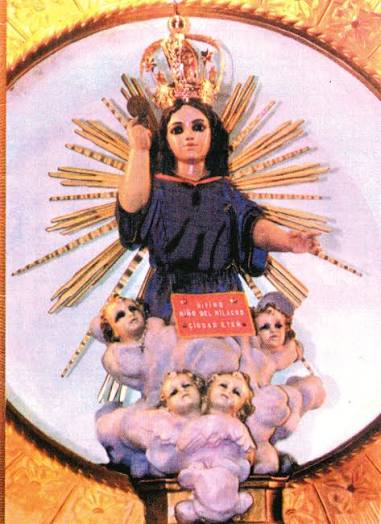
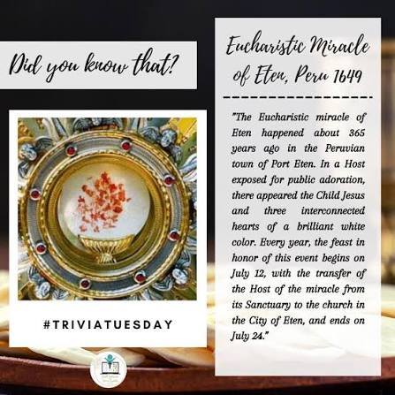
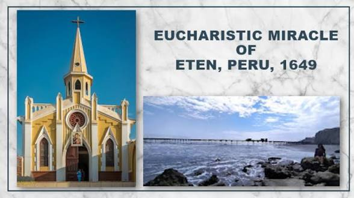

The 1649 Eucharistic Miracle of Eten, Peru, is one of the earliest documented Eucharistic apparitions in the Americas, where witnesses saw the Child Jesus appear within a consecrated Host, once even wearing the traditional attire of the local indigenous population.
Historical records of this miracle are kept in the Vatican Library and the General Archive of the Indies. Blessed Carlo Acutis featured this event in his global exhibition. Today, Ciudad Eten remains a vibrant site of devotion, with thousands of pilgrims gathering annually for the Feast of the Divine Child of the Miracle.